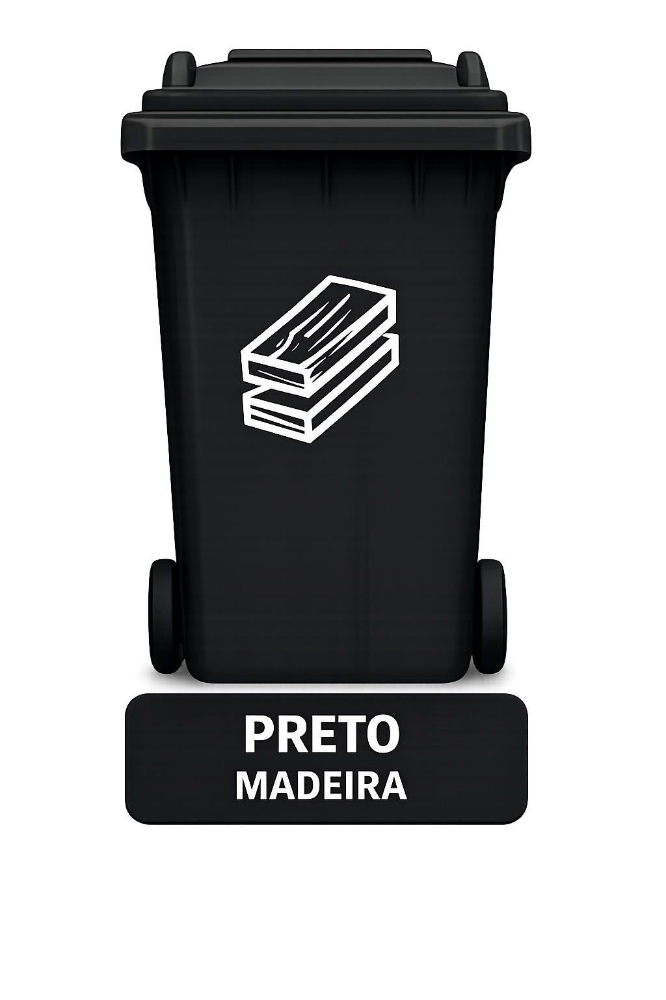
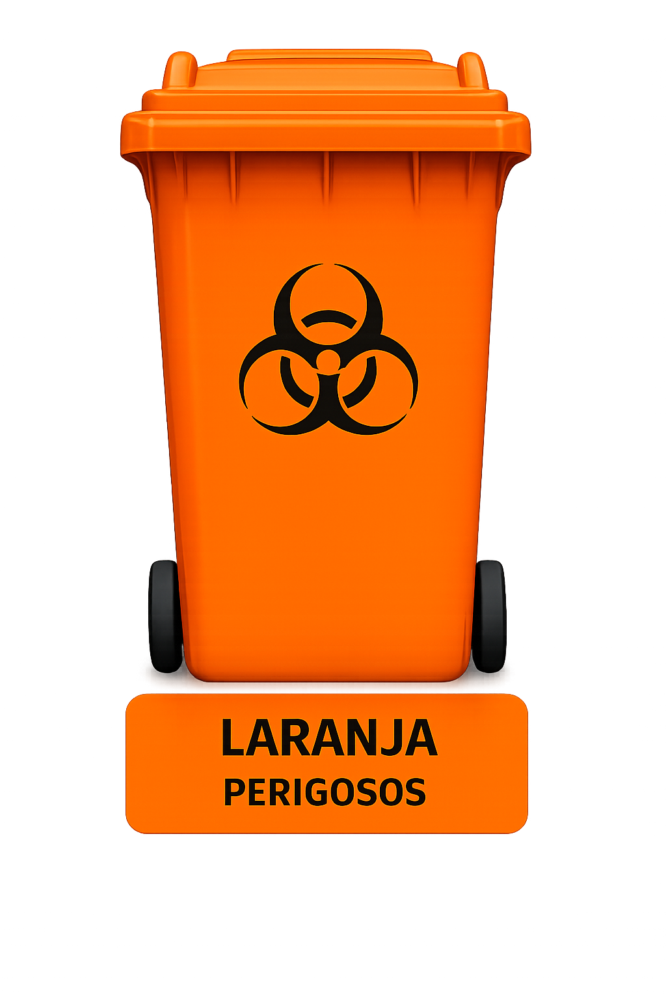
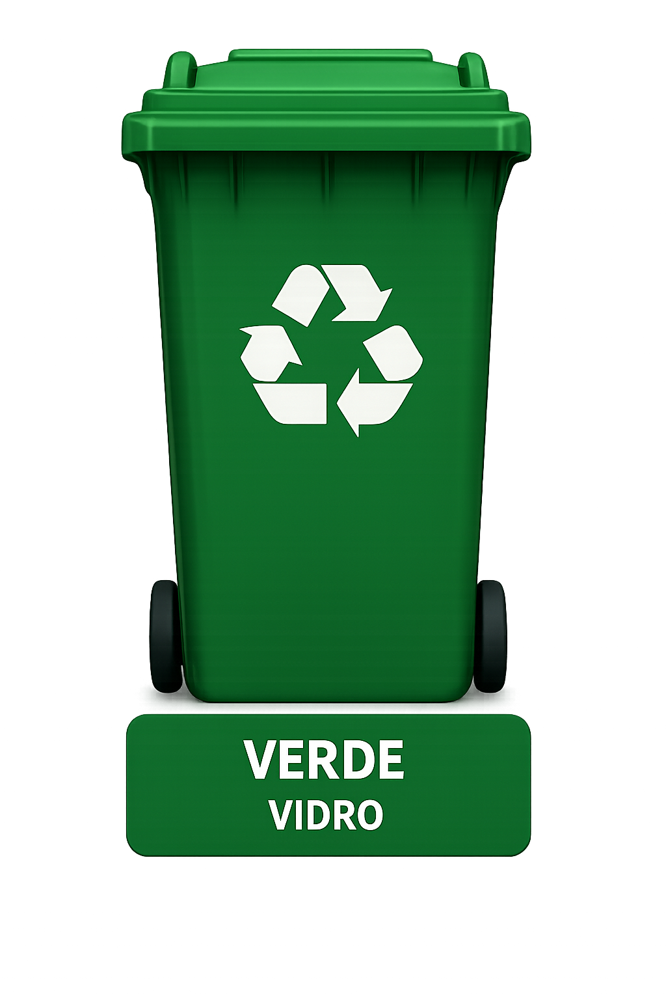
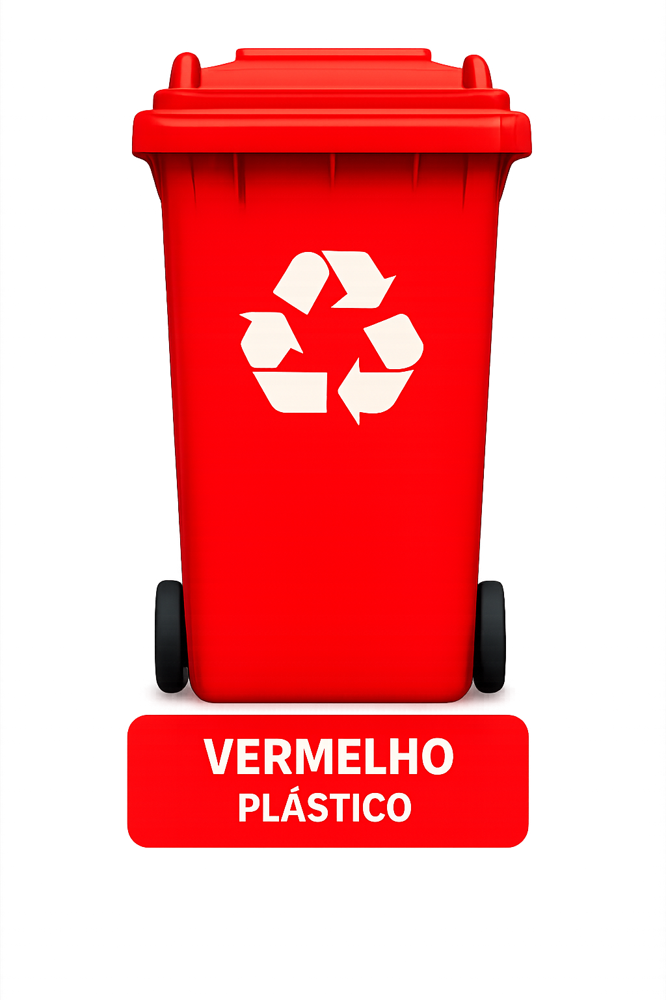
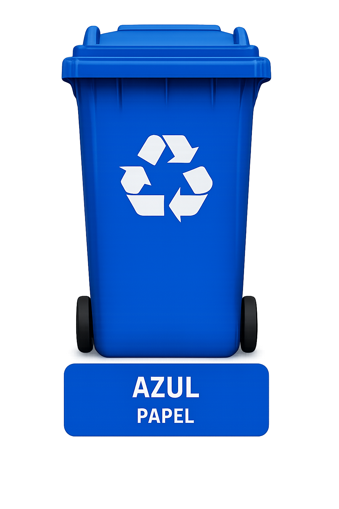
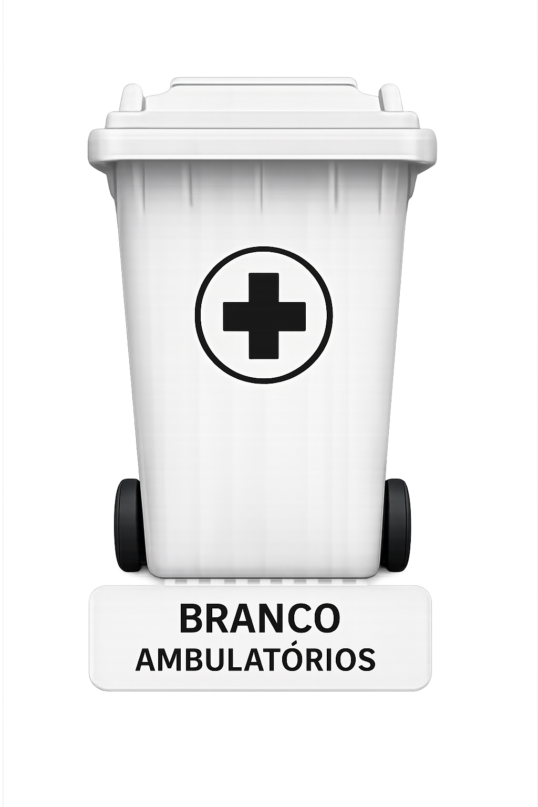
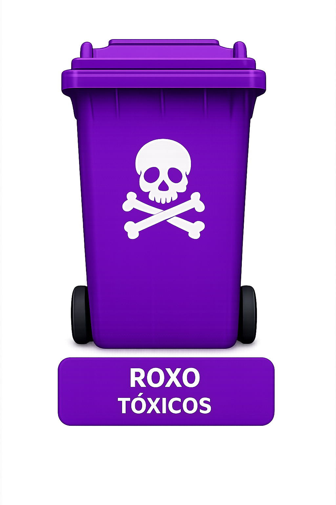
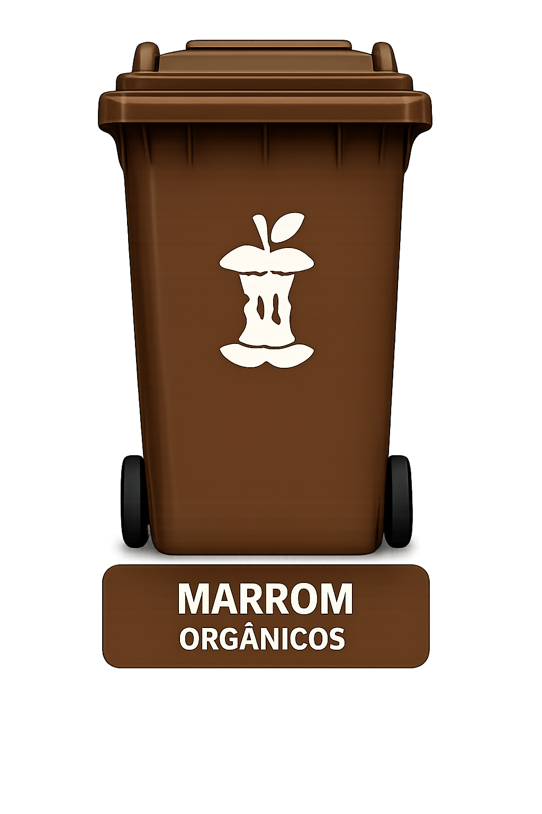
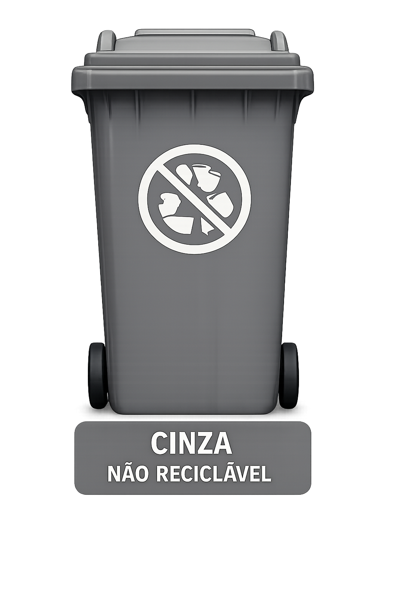
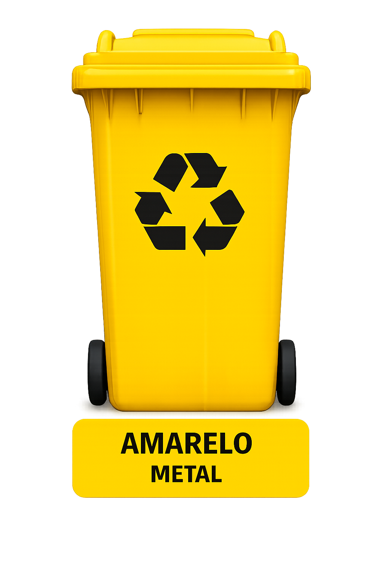

Coleta seletiva solidária · Desde 2007
Coleta seletiva, triagem e destinação responsável para cooperativas de catadores.
Tópicos do ReciclaCT
Cards com imagem, resumo e acesso à página completa de cada tema.
Sobre o ReciclaCT
O ReciclaCT é o programa piloto de coleta seletiva solidária do Centro de Tecnologia da UFRJ, criado em 2007 para cumprir o antigo Decreto 5.940/06 (atualizado pelo Decreto 10.936/2022), que estabelece a destinação de resíduos recicláveis às cooperativas de catadores.
Em 2010 foi inaugurado o Centro de Triagem oficial, permitindo que os resíduos gerados em salas de aula, laboratórios e restaurantes no CT fossem centralizados, pesados, prensados e catalogados de forma profissional.
O projeto atua na destinação de materiais, treinamento ambiental de funcionários e sensibilização da comunidade universitária, garantindo inclusão social e fortalecimento da economia circular.
📊 Linha do Tempo
- 2006: Apresentação do projeto ao Conselho Superior.
- 2007: Lançamento oficial do Programa ReciclaCT.
- 2010: Construção do Centro de Triagem no campus.
- 2017: Criação do Fórum Verde e expansão de campanhas.
- 2024: Transformação no Projeto de Extensão CT-Preserva.
🔄 O Caminho dos Resíduos no CT
Dinamismo interativo: entenda o ciclo completo percorrido pelos materiais desde o descarte até a reciclagem industrial.
Coletores de Coleta Seletiva
Conheça os coletores distribuídos pelo campus e saiba o que descartar em cada um. Gire o carrossel movendo o mouse para as laterais e clique para selecionar.










Selecione um Coletor
Mova o mouse para os lados ou clique em um coletor para ver o que pode e não pode ser reciclado nele.
♻️ Calculadora de Impacto Ecológico
Insira a quantidade média de resíduos que você descarta de forma correta e veja os recursos economizados.
Sua Contribuição Mensal
Recursos Preservados
🎮 Jogo do Descarte Correto
Duelo de reciclagem: ordene os resíduos para o coletor certo e pontue!
Escolha o coletor correspondente!
🎓 Projeto de Extensão CT-Preserva
O ReciclaCT evoluiu para um projeto acadêmico e integrador com a CCMN/UFRJ.
Atualmente, o projeto é coordenado pela servidora Marlene Barbosa Caldas e conta com a participação de três estudantes extensionistas do Bacharelado em Ciências Matemáticas da Terra (CCMN/UFRJ):
- 👨🎓 Victor Machado: Informática do projeto e administração de dados.
- 👨🎓 Luis Machado: Redes sociais e disseminação de campanhas ecológicas.
- 👩🎓 Ana Carolina Gomes: Formação ambiental, eventos e educação institucional.
📣 Quer ser extensionista?
Buscamos graduandos de Engenharia Ambiental, Computação, Química, Geologia e afins para integrar o time. Candidate-se via formulário de contato abaixo!
🛠️ Atuação dos Extensionistas
- ✔️ Apresentações em salas de aula para calouros de BCMT.
- ✔️ Visitas guiadas com a Engenharia Ambiental no Centro de Triagem.
- ✔️ Rondas periódicas e numeração identificadora nos coletores do CT.
- ✔️ Integração na SIAC e Feira de Carreiras da UFRJ.
- ✔️ Evento ecológico UFRJ Mar em Paraty.
- ✔️ Pintura manual da logo substituindo o letreiro de aço roubado.
🧠 Mitos, Verdades e Erros Comuns
Informação essencial baseada na rotina diária dos catadores do Centro de Triagem.
🚨 Top 5 Erros no Descarte
- ❌ Restos de alimento nas embalagens: Atraem vetores e estragam fardos inteiros.
- ❌ Papel molhado ou engordurado: Perde a propriedade de celulose (ex. guardanapo usado).
- ❌ Vidro quebrado solto: Risco grave de cortes e lesões físicas aos catadores. Proteja-os!
- ❌ Pilhas no lixo comum: Vazamento de metais pesados que contaminam o solo.
- ❌ Resíduos eletrônicos misturados: Devem ser catalogados em casamatas digitais de REEE.
❓ Mitos & Verdades
- ❓ Copo descartável é reciclável?
Sim, desde que limpo e sem resíduos de café ou refrigerante. - ❓ Caixa de pizza pode ir para o papelão?
Depende. A parte de cima limpa sim; a base engordurada deve ir para rejeitos. - ❓ Tampinhas plásticas devem ser separadas?
Verdade. Elas possuem polietileno rígido e têm valor comercial alto separado da garrafa PET.